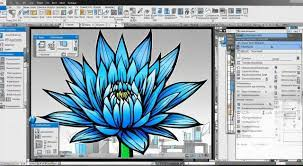

<!DOCTYPE html>
<html lang="ar" dir="rtl">
<head>
     <meta charset="UTF-8">
      <meta name="viewport" content="width=device-width, initial-scale=1.0">
      <title>تعليم لغات الويب</title>
    <link rel="stylesheet" href="coreldraw.css">
    <script src="js.js" defer></script>

    </html>

<body>

    <header>
        
        <div class="logo">CorelDRAW 💡</div>
        <nav>
            <ul>
                <li><a href="home.html">الرئيسية</a></li>
                <li><a href="home.html">الدورات</a></li>
                <li><a href="about.html">عنا</a></li>
                <li><a href="contact.html">اتصل بنا</a></li>
            </ul>
        </nav>
    </header>


        <section>
            
             <h2>ما هو CorelDRAW؟</h2>
             <p>CorelDRAW هو برنامج تصميم جرافيكي احترافي يستخدم لإنشاء الرسوم المتجهة، الشعارات، الملصقات، وغيرها من التصاميم. يعتبر من الأدوات القوية في مجال التصميم الجرافيكي.</p>
        </section>
       </section> 
       <section>
        <h2>التنزيل downlowd </h2>
        <p> ان كنت تواجه صعوبة في تحميل البرنامج او تعددت المصادر الغير دقيقة بتنزيله يمكنك تحميله من خلال الرابط ادناه هنا</p>
        <a href="#" target="_blank"> يمكنك تنزيل البرنامج من هنا</a> |
       </section>
        <section>
            <h2>واجهة المستخدم</h2>
            <p>تتكون واجهة CorelDRAW من عدة عناصر رئيسية:</p>
            <ul>
                <li><strong>شريط الأدوات:</strong> يحتوي على الأدوات الأساسية للرسم والتعديل.</li>
                <li><strong>شريط الخصائص:</strong> يعرض خصائص الأداة المحددة.</li>
                <li><strong>نافذة المستند:</strong> حيث يتم إنشاء التصميم.</li>
                <li><strong>لوحات الألوان:</strong> لاختيار الألوان المناسبة.</li>
            </ul>
        </section>
        <section>
            <h2>الأدوات الأساسية</h2>
            <p>بعض الأدوات الأساسية في CorelDRAW تشمل:</p>
            <ul>
                <li><strong>أداة التحديد (Pick Tool):</strong> لتحديد وتحريك العناصر.</li>
                <li><strong>أداة الشكل (Shape Tool):</strong> لتعديل أشكال العناصر.</li>
                <li><strong>أداة النص (Text Tool):</strong> لإضافة النصوص وتعديلها.</li>
                <li><strong>أداة الرسم الحر (Freehand Tool):</strong> للرسم الحر.</li>
                <li><strong>أداة الملء (Fill Tool):</strong> لملء العناصر بالألوان.</li>
            </ul>
        </section>
        <section>
            <h2>كيف تبدأ تصميمًا جديدًا؟</h2>
            <p>لبدء تصميم جديد في CorelDRAW:</p>
            <ol>
                <li>افتح برنامج CorelDRAW.</li>
                <li>اختر "ملف" ثم "جديد" لإنشاء مستند جديد.</li>
                <li>حدد حجم المستند المناسب (مثل A4).</li>
                <li>ابدأ التصميم باستخدام الأدوات المتاحة.</li>
            </ol>
        </section>
        <section>
            <h2>نصائح لتصميم احترافي</h2>
            <ul>
                <li>استخدم الألوان بحذر وتناسق.</li>
                <li>اهتم بالتفاصيل الصغيرة.</li>
                <li>استخدم الخطوط المناسبة للتصميم.</li>
                <li>احفظ عملك بانتظام.</li>
            </ul>
            <h2>بعض الصور</h2>
            
            


        </section>
   
    </main>
    
  
    <footer>
        <p>حقوق الطبع والنشر &copy; 2025</p>
    </footer>
</body>
</html>

     